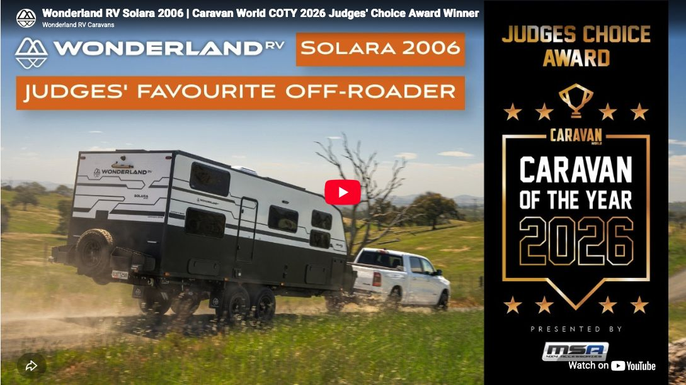

The couples caravan Caravan World’s judges chose as the one they would take home. Explore the design and features that made it their personal pick.
The family caravan that won best overall, best family and best innovation at Caravan of the Year. Explore the layout and specification behind its three-title win.
‘The chassis is a work of art both in its design and execution.’Tim Van Duyl, Caravan World